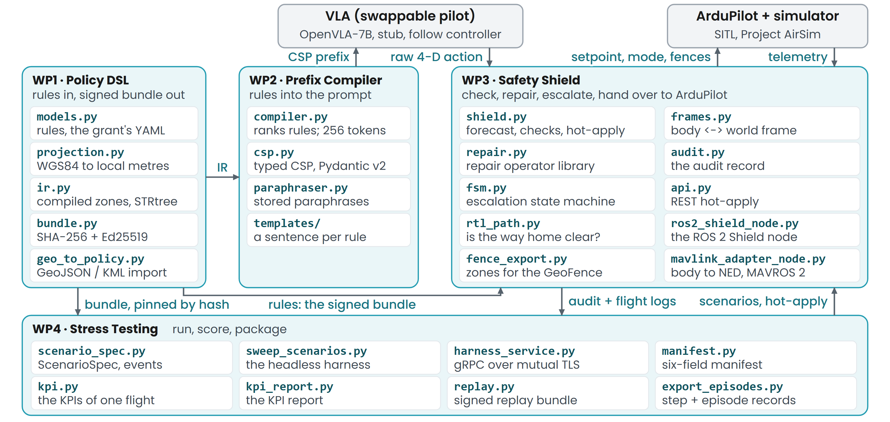

WP4 · Work package
Dynamic-scenario stress testing
WP4 delivers a library of test scenarios in which rules change mid-flight (moving NFZ, time-window switch, corridor swap), and a harness that runs them and computes the KPIs. Under the grant, every KPI in the final report comes from this harness.
What the grant asks for
“every reported KPI in the final report comes from a Stress Testing run executed in the [hil] topology”Grant, Stress Testing page
Main files: guardrail/scenario_spec.py experiments/profiles/ experiments/templates/ guardrail/kpi.py tools/kpi_report.py guardrail/replay.py guardrail/manifest.py deploy/
In one picture

Built
A scenario specification
ScenarioSpec and ScenarioEvent follow the grant's Stress Testing page field for field, with expected-outcome and expected-fail-safe labels and seeds.
guardrail/scenario_spec.pySmoke and nightly profiles
A smoke profile of 55 scenario cells (62 episodes) and a nightly profile of 221 cells (732 episodes), with stressors for wind, gusts, start jitter and GPS dropout. Every velocity the harness flies goes through a model of ArduPilot's position controller, and every Shield in it forecasts 5 s ahead at 0.1 s steps, as the grant specifies, apart from one labelled 3 s comparison arm reported on its own.
experiments/profiles/Scenario templates and mid-episode events
Each scenario template is one YAML file (16 files). Every event type the grant names can run in the middle of an episode on the headless harness (no simulator; ArduPilot's Loiter, RTL and Land modelled as ideal position control), and RTL and Land outcomes occur there; a scenario can also carry paraphrased instructions and a key that switches the rule summary on or off.
experiments/templates/guardrail/scenario_spec.pyA manifest for every episode
Each episode records the code revision, the weights hash, the policy hash, the seed, the simulation speed-up and the topology, so any number can be traced back to what produced it.
guardrail/manifest.pyA KPI report with baselines
The report computes the grant's KPIs per scenario family and per template from the logs on disk, prints each score next to its null baseline, and marks a value that cannot be measured as such instead of printing a zero.
tools/kpi_report.pyguardrail/kpi.pyReplay bundles and a regression sweep
Episodes are packed into replay bundles that re-derive their own KPIs, and a 13-scenario headless sweep guards the Shield against regressions.
guardrail/replay.pyexperiments/sweep_scenarios.pyImage definitions for the Jetson Orin
One image definition covers dev, hil and flight, with only a topology file differing, and a runbook describes setting up the Orin. For JetPack 6.2 the images run ROS 2 Jazzy in an Ubuntu 24.04 container, so rclpy runs on Python 3.12, and a first-boot check reports the Orin's setup. A profiler that times Shield ticks from real flights against the grant's tick budgets is written to run on the Orin unchanged.
deploy/docs/RUNBOOK-orin-hil.mddeploy/orin/first_boot_check.shtools/profile_shield_tick.pyA control plane for the stress harness
The harness takes the grant's 10 gRPC calls (sessions, policy injection, tasks, episodes, rule changes, events and telemetry streams) over mutual TLS, live or scheduled, and returns each episode's bundle and KPI table. It drives the headless harness (no simulator). Episodes export to step and episode records with the grant's field names, and a stored episode can be re-flown from its bundle and compared.
guardrail/harness_service.pyguardrail/protos/harness.prototools/export_episodes.pytools/rerun_episode.py
Shown
Profiles run end to end
On 6 Oct, before the profiles grew to their present size, smoke ran 52 episodes in 15.9 s and nightly 633 episodes in 223 s. Both headless (no simulator).
A KPI report over the stored episodes
The report has been run over 742 stored episodes: flights re-scored from their own logs, stress bundles and sweep scenarios, each group tabulated separately.
Reproduce:
python tools/kpi_report.py